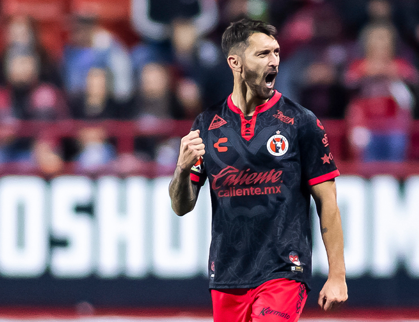
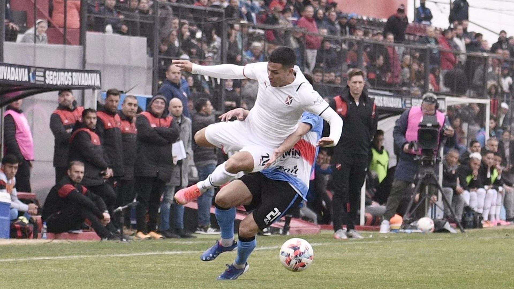

Chucky Ferreyra cerca de ser nuevo refuerzo
El exdelantero de Banfield y Vélez, actualmente en Xolos de México, está cerca de ser el nuevo refuerzo de Independiente. leer más...

Dura derrota en Paraná
El rojo sufrió una durisima e inesperada derrota frente al último en los promedios por 3 a 1, el resultado se vio ligado a los graves errores del equipo y genera incertidumbre de cara al futuro leer más...

Se acerca un nuevo defensor para el Rojo
Independiente está cerrando el que sería el segundo refuerzo para Eduardo Dominguez, se trata del uruguayo Edgar Elizalde del Pescará que se desempeña como defensor central y lateral izquierdo. El zurdo de 22 años es una gran apuesta de parte del equipo de scouting. leer más...